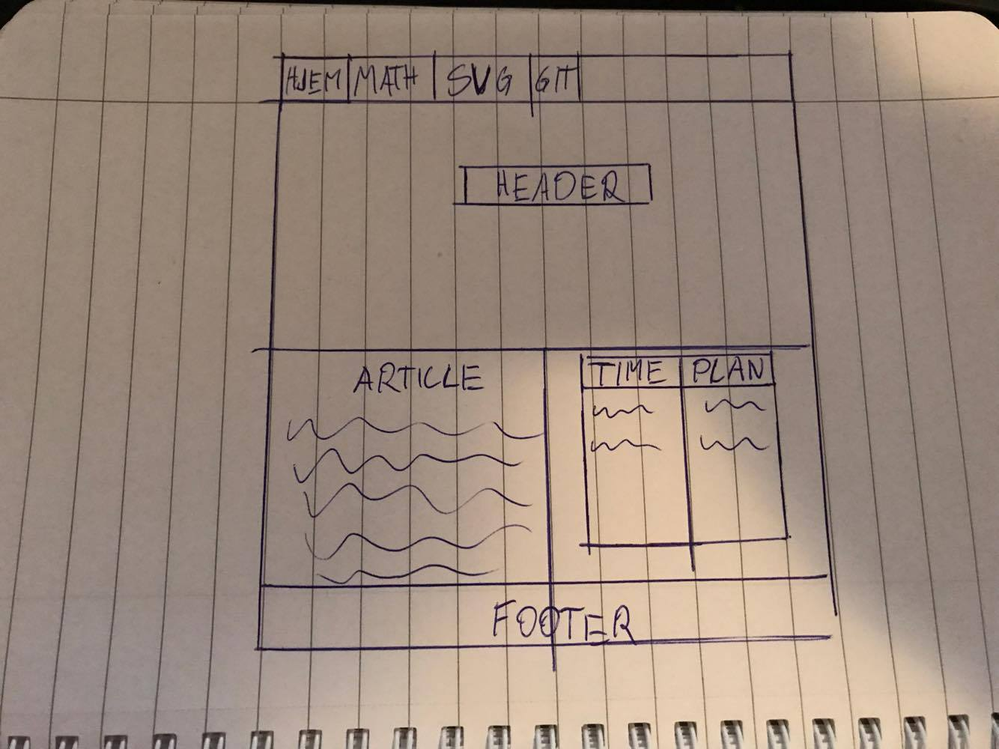
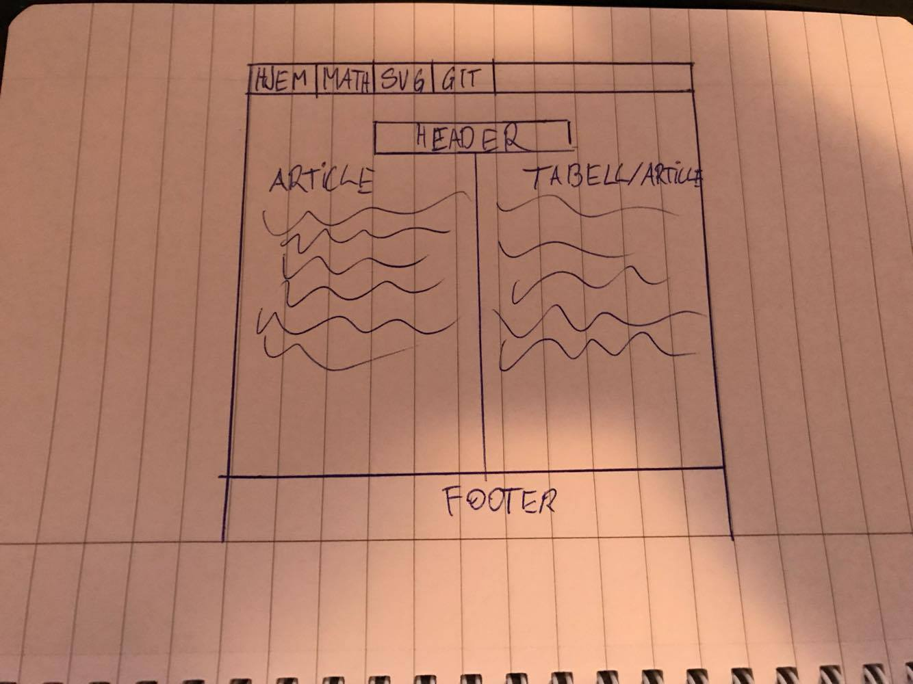

Om min nettside
Tanken min om denne nettsiden var å få den til å se presentabel ut og at den skulle møte dagens standarder med tanke på design.
Jeg har lenge sett nettsider som ser veldig bra ut og lurt på hvordan det er å designe en nettside og bygge den opp. Etter denne oppgaven mener jeg at jeg har fått et lite innblikk i hvordan dette kan foregå.
Jeg har tatt litt inspirasjon fra sider som Tesla og Apple. Dette er sider som jeg liker personlig og som jeg syntes møter dagens trender og design. Det er forøvrig Apple sitt nettsted som jeg liker best og har tatt mest inspirasjon fra.
Da jeg begynte med å designe prøvde jeg å finne noe som jeg likte, mens samtidig var innenfor rekkevidde med tanke på hva jeg kan om HTML og CSS. Jeg valgte dette type designet da jeg liker de "harde" linjene og hvor enkelt og funksjonelt det er. Under kan du se hvordan malen min for oppgaven så ut.
 